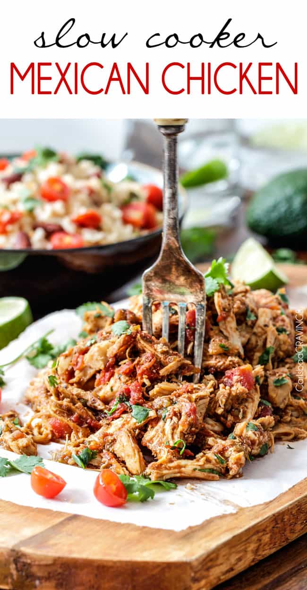

Slow Cooker Chicken Tacos

Description
Mexican style shredded chicken tacos made easy! Can be cooked in a slow cooker or a pressure cooker.
Ingredients
- 2 pounds chicken breasts
- 1 tablespoon olive oil
- 1/2 cup mild salsa (medium if you like spicy)
- 3-4 tablespoons brown sugar **
- 1 4 oz. can mild diced green chilies
- 1 14.5 oz. can fire roasted diced tomatoes, drained (or regular)
- 1 tablespoon chili powder
- 1 1/2 teaspoons salt
- 1 tsp EACH ground cumin, garlic powder, onion powder
- 1/2 tsp EACH smoked paprika, dry oregano, pepper
- 1/2 teaspoon ground chipotle chili pepper (optional for more heat)
- 1 teaspoon liquid smoke
- Hot sauce to taste
Steps
- Rub chicken breasts with oil and place in the bottom of your slow cooker. Add all of the remaining ingredients except for the hot sauce. Cook on high for 2-4 hours or on low for 6-7 hours or until chicken is tender enough to shred.
- Shred the chicken and let it cook on low for an additional 20 minutes to absorb some of the liquid/juices. Drain all excess liquid (see note***). Taste and add hot sauce to taste if desired.
- INSTANT POT:Cook on high pressure for 13 minutes then let release for 15 minutes. Shred and pressure cook for another 5 minutes.